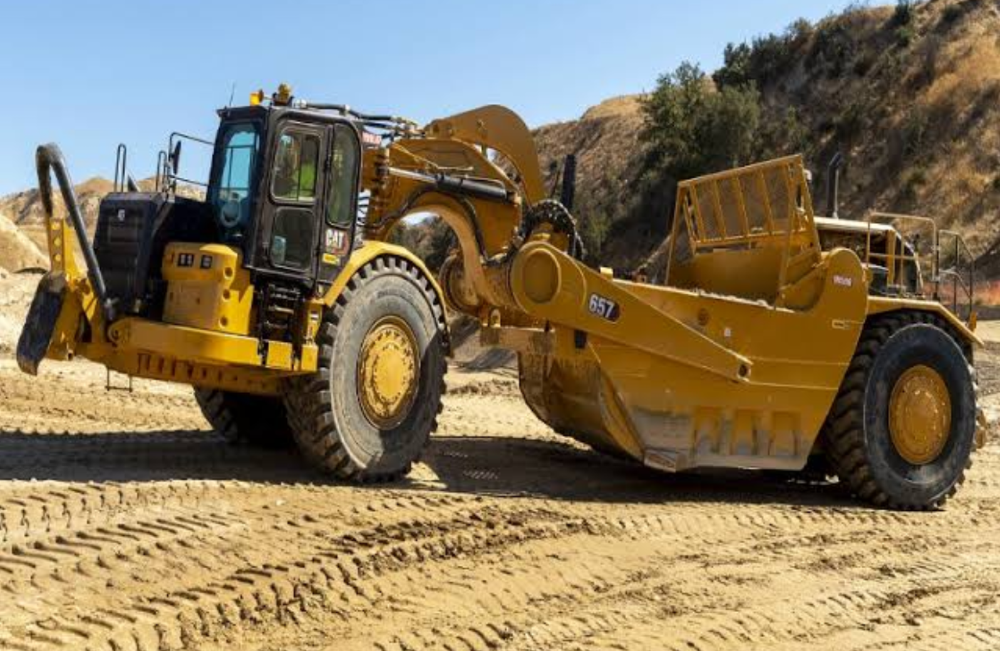
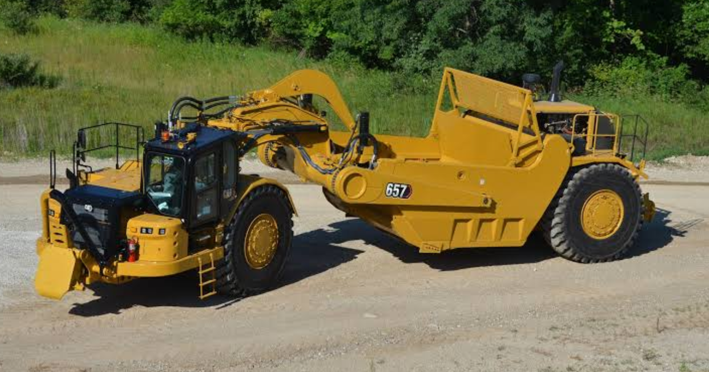
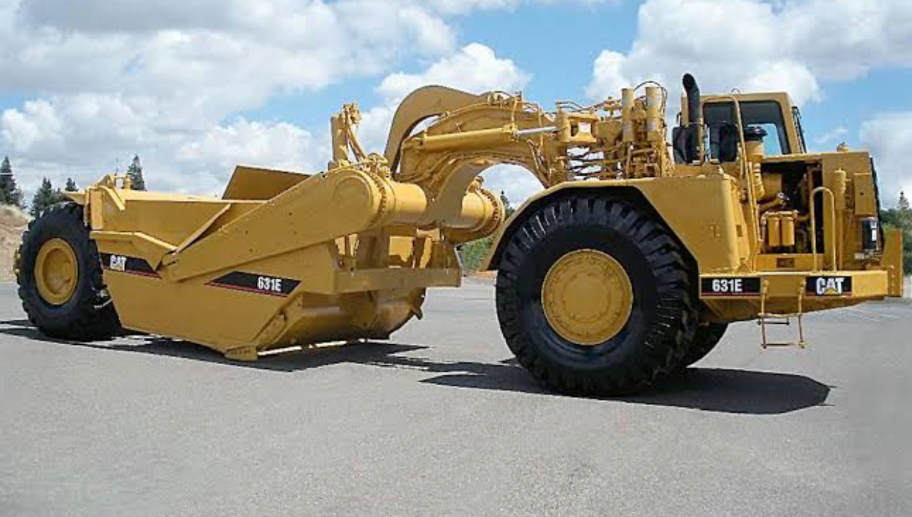
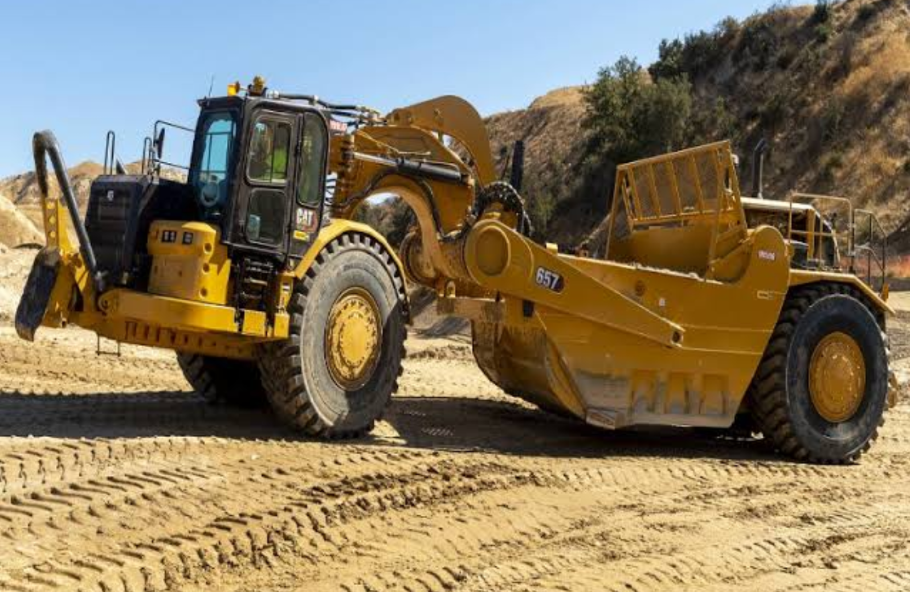
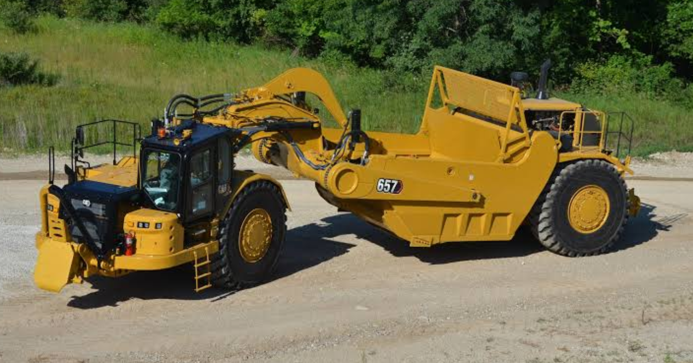
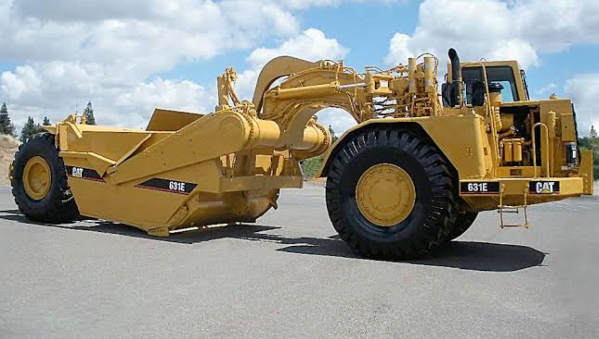
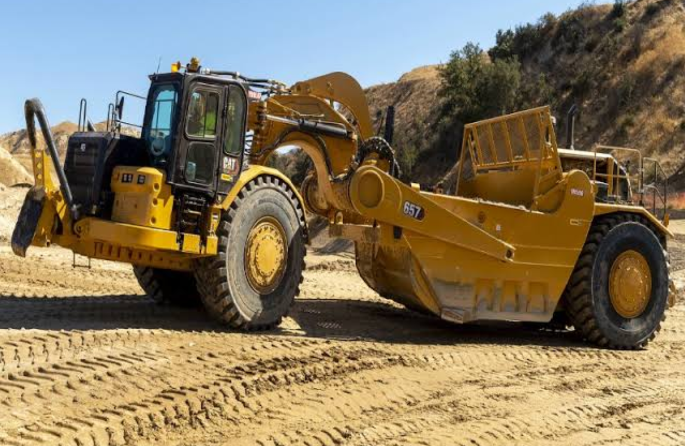
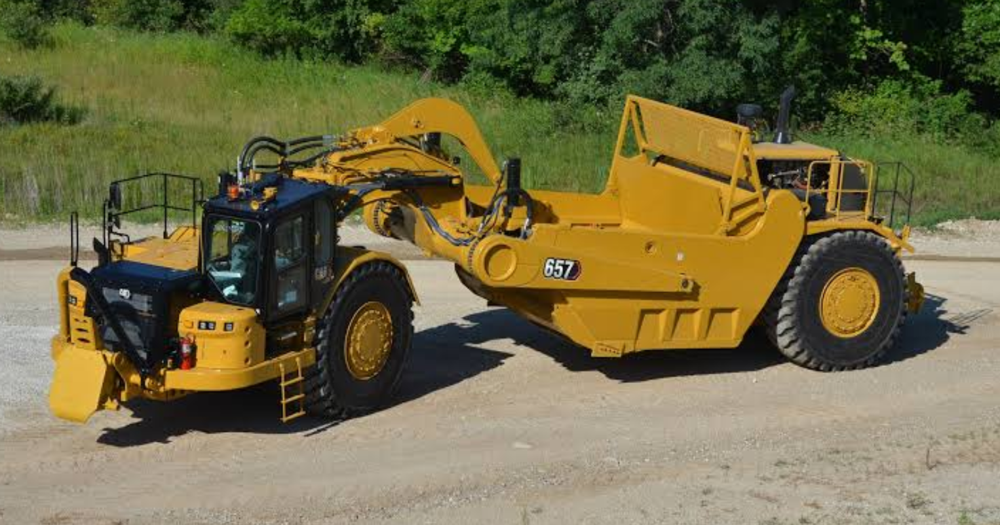
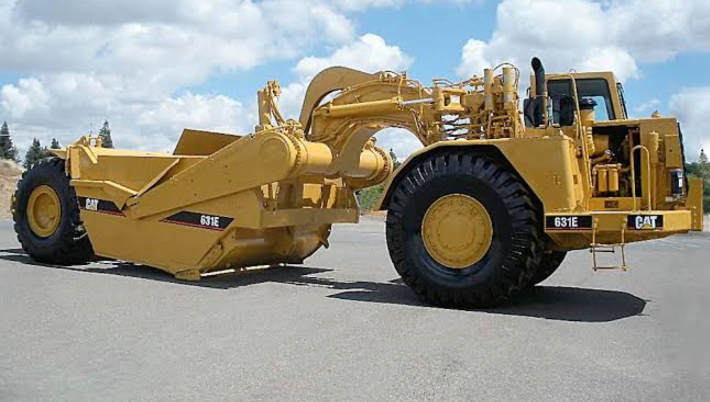

Wheel tractor-scrapers are also used in earthmoving operations. This piece of heavy equipment consists of a rear hopper which can move vertically, with a sharp edge for flattening a surface. The front end hosts a sharp edge to cut soil and a carpenter’s plane for cutting wood. The two tools work together to fill the hopper and transport whatever material was removed from a cleared area.



Stock availability: 8
| Gross Power | Displacement | Net Power | Engine Model | Bore |
|---|---|---|---|---|
| 324kW | 15.2 l | ISO 9249302 | Tractor;C18, Scraper;C15Cat C15 | 137.2mm |